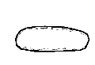
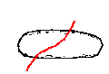
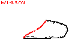
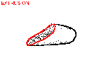
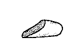
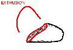
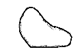

[1.Camera]
[2.Create]
[3.Paint]
[4.Extrude]
[5.Cut]
[6.Smooth]
[7.Bend]
[8.File]
Step 5: Cutting
1
2
3
4
5
1) Create an object.
2) Draw a stroke that crosses the object, starting and ending outside of it.
3) The stroke cuts the object and deletes the left-hand side of the stroke entirely.
4) Rotate the model to see the result.
5) A single click on the left button finishes the operation.
6
7
6-7) Instead of a click, you can draw an extruding stroke to extrude the section.
When you have practiced enough, go to
step 6.
If the program works strangely, close the applet window and
restart the applet.
Copyright (C) 1998
Takeo Igarashi